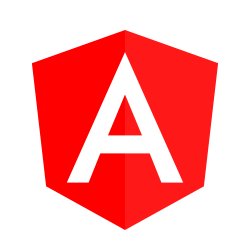

<!--The content below is only a placeholder and can be replaced.-->
<mat-toolbar>
  <span>Gerador de Projetos</span>
  <span class="nav-spacer"></span>
  
</mat-toolbar>

<mat-grid-list cols="1" rowHeight="6:1">
  <mat-grid-tile>
    <div class="container">
      <br><br><br>
      <mat-form-field>
        <mat-select>
          <mat-option>Selecione...</mat-option>
          <mat-option value="option">Teste</mat-option>
          <mat-option value="option">Projeto</mat-option>
        </mat-select>
        <mat-label>
          <b>Tipo de Projeto</b>
        </mat-label>
      </mat-form-field>
      <form class="container" [formGroup]="options">
        <mat-checkbox formControlName="hideRequired">Gerar Repositório</mat-checkbox>
        <mat-checkbox formControlName="hideRequired">Gerar JOB</mat-checkbox>
        <mat-checkbox formControlName="hideRequired">Gerar PAAS</mat-checkbox>
      </form>
    </div>
  </mat-grid-tile>
</mat-grid-list>
<mat-grid-list  cols="1" rowHeight="6:1">
  <mat-grid-tile>
    <button mat-raised-button>Gerar</button>
  </mat-grid-tile>
</mat-grid-list>